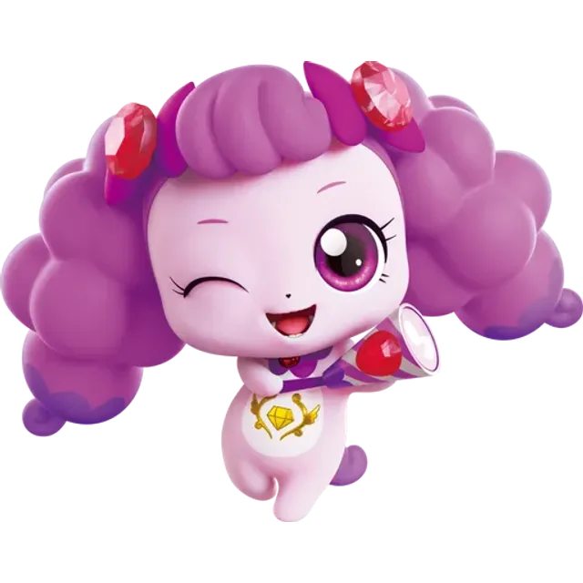

방글핑
Teeheeping
2기 반짝반짝
로열
발랄한 사고뭉치 말괄량이, 웃음의 티니핑. 마음가는 대로 충동적으로 행동하는 경향이 있는 어딘가 어설픈 신참. 항상 방글방글 웃는 모습을 하고 있는데, 때때로 그 웃음이 다른 이들에게는 힘이 된다.
- 기수
- 2기 반짝반짝
- 등급
- 로열
- 성별
- 여성
- 감정·상징
- 웃음
- 소품
- 폭죽
- 보석
- 루비
- 좋아하는 것
- 웃음소리, 재미있는 놀이, 뭐든지 첫번째로 하기!
- 싫어하는 것
- 잔소리, 인내하는 것, 엄숙한 분위기
- 좋아하는 음식
- 민트 초코 케이크
- 성우
- 문남숙